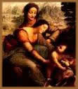

A infância
e a juventude de Jesus não devem ter sido muito diferentes da
de qualquer menino judeu da Galiléia naquela época. Aqui você
mergulha na infância do Menino Jesus.
As primeiras
letras
No tempo de Jesus, o analfabetismo era muito
raro entre os judeus do sexo masculino. Pois, ao completar 13
anos, os meninos deviam comparecer à sinagoga e ler uma
passagem da Torá (as Sagradas Escrituras
judaicas, constituídas pelos cinco primeiros livros
da Bíblia: Gênesis, Êxodo, Levítico,
Números e Deuteronômio). Era o Bar-Mitzvá,
um rito de passagem no qual o jovem se tornava responsável
por todos os seus atos. Por força dessa tradição,
todos os garotos recebiam uma instrução elementar,
que compreendia a leitura, a escrita, a história do povo
judeu e o conhecimento dos principais salmos da Bíblia,
adotados como orações.
Jesus teve certamente acesso a essa educação
básica. E a famosa passagem de Lucas, na qual o menino
Jesus debate com os doutores do Templo, é interpretada
por alguns especialistas como sendo sua cerimônia de Bar-Mitzvá.
Teria sua instrução
se interrompido nesse estágio?
Durante
muito tempo, acreditou-se que a pobreza da família impedira
seu acesso à educação superior. Tal suposição
parecia concordar com certas passagens dos evangelhos - como
um trecho de João no qual os ouvintes se admiram com
seus ensinamentos, dizendo: "Como pode ser ele versado
nas Escrituras, sem as ter estudado. Mas a opinião dos
pesquisadores começou a mudar nos últimos anos".
Um estudo mais profundo das narrativas evangélicas
e principalmente uma nova compreensão da sociedade judaica
da época, parece indicar que nem sua família era
tão pobre nem sua instrução parou no nível
elementar. Na verdade, os especialistas se inclinam cada vez
mais a encará-lo como um rabino, altamente versado na
cultura tradicional de seu povo. Rabino, aliás, é
o título pelo qual seus interlocutores o tratam em inúmeras
passagens dos evangelhos.
Jesus seria
um rabino?
Uma das formas de se obter essa educação
superior era participar dos círculos de discípulos
de rabinos ilustres. Paulo - que inicialmente perseguiu os seguidores
de Jesus e depois se tornou o principal teórico e propagandista
do cristianismo - recebeu esse tipo de instrução
junto ao rabino Gamaliel, um dos maiores mestres da
época. Teria Jesus vivido uma experiência parecida?
É possível. Porém os evangelhos não
fornecem nenhuma informação a respeito. Marcos
e João começam seu relato com Jesus prestes a
iniciar sua missão, aos 30 ou, mais provavelmente, 33
anos de idade. Mateus e Lucas traçam um brevíssimo
retrato da infância e, daí, pulam para a idade
adulta. Alguns apócrifos apresentam outras cenas infantis,
mas são narrativas tardias e tão fantasiosas que
não despertam confiança. O resultado de tudo isso
é uma lacuna de cerca de 20 anos na "biografia"
do Homem.
Essa omissão de dados deu margem a todo
tipo de especulação. Alguns autores associaram
Jesus à comunidade dos essênios - conjectura totalmente
descartada pelas pesquisas mais recentes. Outros o fizeram viajar
à Índia, em busca de conhecimentos esotéricos.
Não há nenhuma prova a favor ou contra essa hipótese.
De qualquer modo, apesar de fascinante, ela é desnecessária,
pois a sabedoria oculta estava disponível na Palestina.
O Antigo Testamento menciona explicitamente a existência
de confrarias místicas no tempo dos profetas Elias e
Eliseu. Elas certamente continuavam a existir, e até
com maior expressão, no século 1 d.C., quando
o judaísmo se encontrava dividido num sem número
de partidos e seitas.
A eventual participação do jovem
Jesus num desses círculos iniciáticos é
assunto polêmico. Mas poderia explicar as peculiaridades
de alguns de seus ensinamentos, certas passagens obscuras de
sua vida, e até mesmo a maneira como estruturou seu próprio
grupo de discípulos.
O jovem trabalhador
A tradição cristã diz que
José, o esposo de Maria, exercia a profissão de
carpinteiro. O evangelho de Marcos vai além. E afirma
que o próprio Jesus seguia esse ofício: "Não
é este o carpinteiro, o filho de Maria (...)?",
perguntam seus ouvintes, admirados com a profundidade dos ensinamentos
que acabara de proferir na sinagoga.
Esse dado é muito verossímil, pois,
na época, as profissões passavam de pai para filho.
Mas a tradução não faz inteira justiça
ao texto grego do evangelista. Pois a palavra tékton,
utilizada por Marcos, possui um significado mais amplo, e se
aplica tanto à função de carpinteiro quanto
às de pedreiro e serralheiro.
O mais provável, portanto, é que
Jesus fosse um trabalhador autônomo, capaz de exercer
essas diferentes habilidades profissionais, de acordo com a
demanda dos clientes. Tal interpretação converge
com o que escreveu o autor cristão Justino de Roma, no
ano 150 d.C.. Esse escritor, que nasceu na Galiléia,
a região onde Jesus viveu, afirma que ele fazia cangas
para bois e arados.
A língua
do Mestre
O idioma usado por Jesus no dia-a-dia era o aramaico.
Pois, em sua época, o povo já não falava
mais o hebraico. Considerado uma língua sagrada, o hebraico
era empregado apenas na composição de obras eruditas
e nos ritos religiosos.
A língua
do povo
Na comunicação cotidiana, desde
a época do exílio na Babilônia (586 a.C.-
538 a.C.), só se utilizava o aramaico. Trata-se de um
idioma do grupo semítico, originário da Alta Mesopotâmia,
falado ainda hoje em círculos restritos. É tão
semelhante ao hebraico quanto o espanhol ao português.
E, a partir dos últimos reinados assírios e persas,
no século 6 a.C., tornou-se uma língua internacional,
empregada principalmente no comércio.
Nas sinagogas, as leituras dos textos eram feitas
em hebraico. Mas, para que as pessoas comuns pudessem compreendê-las,
um servente as traduzia ao aramaico. Como rabino, Jesus estava
perfeitamente familiarizado com o idioma sagrado. Isso fica
bem claro numa passagem do evangelho de Lucas, na qual ele lê
na sinagoga um trecho do livro do profeta Isaías, e depois
o comenta para os ouvintes. Segundo os estudiosos, a leitura
foi feita em hebraico e o comentário em aramaico.
As línguas
estrangeiras
A terceira língua falada na região
era o grego, o inglês da época, disseminado por
todo o Oriente Médio com as conquistas de Alexandre,
o Grande, no século 4 a.C.. O grego era utilizado, principalmente,
pelas comunidades judaicas que viviam fora da Palestina. Mas
é bem provável que Jesus o conhecesse. Quanto
ao latim, o idioma do Império, seu uso se restringia
aos quadros da administração romana.